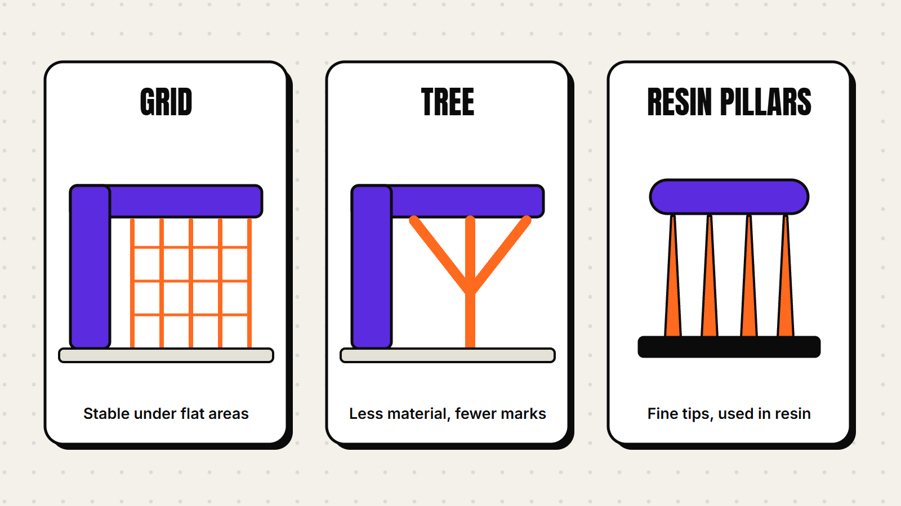
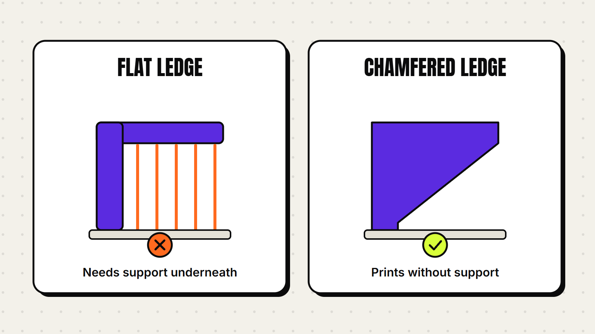

A printer builds from the bottom up, and each layer needs something underneath it. When part of a design hangs in mid-air, the printer adds temporary scaffolding called supports. They make impossible shapes possible, but they also use extra material, take extra work to remove, and can leave marks. This guide shows when supports are needed, the main kinds, and how smart design reduces them.
Vertical walls, gentle slopes, short bridges, and shapes that widen gradually usually print cleanly without help. A cone standing on its base needs nothing. The same cone upside down, balanced on its point, would need plenty.
| Type | How it looks | Strengths |
|---|---|---|
| Grid or line | Straight walls under the overhang | Stable for flat undersides |
| Tree | Branching trunks reaching to points | Uses less material, touches less surface |
| Soluble | A second material that dissolves | Clean results in hidden cavities, needs special setup |
| Resin pillars | Thin tipped columns | Standard in resin printing |

Support material is thrown away. Removing it takes care, and thin features can break during removal. Where supports touch the part, the surface is rougher and may show small bumps or pits. For a display piece, this matters. For a hidden bracket, it often does not.

If supports are unavoidable, choose where they touch. Put them on the back, the underside, or a surface that will be hidden against a wall. Keep them away from faces, lettering, and parts that must fit together.
Supports usually snap off by hand or with small pliers and a flush cutter. Remove them slowly, supporting thin features with your fingers. A light sand can smooth the contact points, though sanding may change the sheen. Resin supports are best removed carefully, following the maker's curing advice, with eye protection.
Tip: When you design, tilt your model on screen and imagine rain falling from below. Surfaces that would catch it are the ones that need support.
Free slicing software shows supports before anything is printed, usually in a different colour. Slide through the layers and watch for features that appear with nothing underneath. Check inside holes and slots, where supports can be impossible to reach with tools. If you see support trapped in a closed cavity, change the design, because it may never come out.
Also check the contact points on thin parts such as antennae, fingers, or blades. A support that is harder to break than the feature it holds will damage it. Thickening the feature slightly, or turning the model, is usually the cure.
Some shapes cannot be made without them, and a well-placed, carefully removed support leaves little trace. The aim is not to remove every one, but to use them where they earn their cost and leave marks where nobody looks. When you compare quotes, remember that careful cleanup is real work and part of what you pay for.
Usually some trace remains where they touched. Careful settings and gentle removal keep it small, and hidden placement keeps it out of sight.
Yes, if you receive a part with them still attached. Work slowly with small pliers or a flush cutter, and protect your eyes.
Surfaces resting on supports can come out slightly rough or uneven. If that face must be accurate, ask for a different orientation.
No. They save material and touch less surface, but broad flat undersides are often steadier on straight grid supports.
Resin printing almost always uses supports, because parts are pulled from the liquid layer by layer and need holding firmly. The skill lies in angling the model so the thin tips land on backs, bases, and hidden folds. Ask to have faces and fine details kept clear, and expect to see a few tiny marks where tips were removed.
For exact starting angles and gaps, read designing for print. Send your file through the quote form and we will check where supports would go before anything is printed.